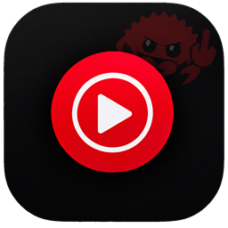
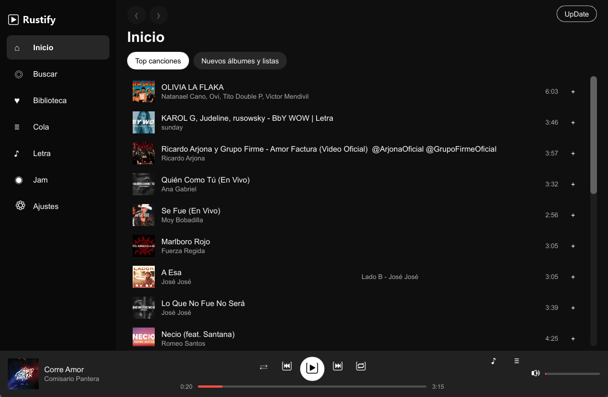
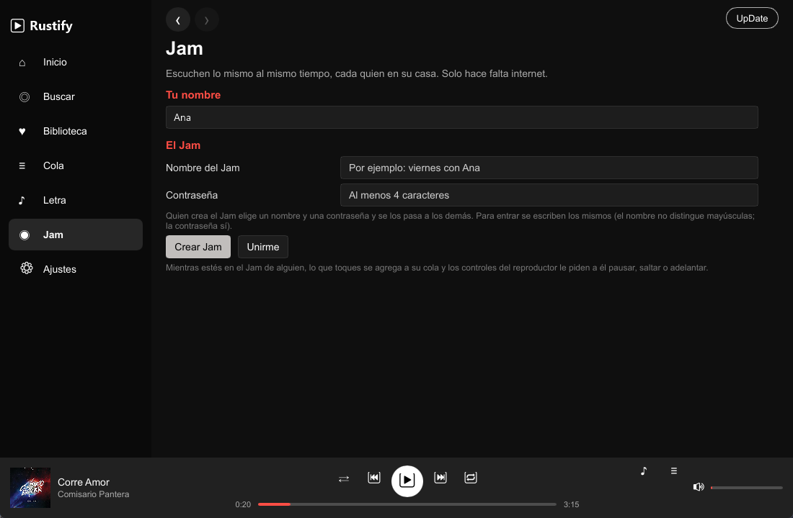
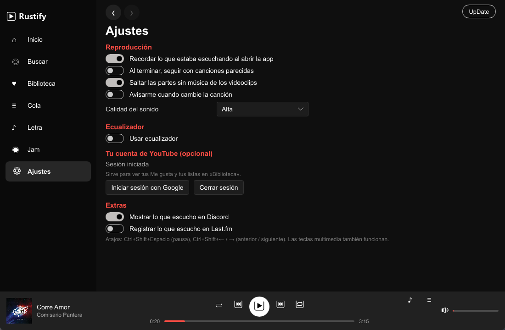
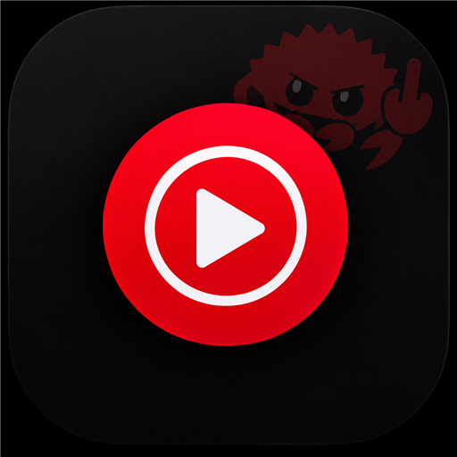

Suena al instante
La canción empieza con el primer fragmento descargado (~0,4 MB) mientras el resto sigue llegando. La siguiente ya se está precargando, y puedes adelantar o atrasar 10 s con un botón.

Rustifyv0.5.1 · Gratis · Código abierto
Rustify es un reproductor de YouTube Music para escritorio escrito desde cero en Rust. Todo el catálogo, sin anuncios y con ~30 MB de memoria en vez de 600.
Windows 10/11 · x64 · Sin permisos de administrador

La razón de existir
Memoria privada medida mientras suena una canción. Sin navegador escondido, sin GPU ocupada solo para dibujar botones.
Todo lo que esperas
La canción empieza con el primer fragmento descargado (~0,4 MB) mientras el resto sigue llegando. La siguiente ya se está precargando, y puedes adelantar o atrasar 10 s con un botón.
Con presets, volumen exponencial y un DSP propio que salta el silencio inicial.
De LRCLIB o las oficiales de YouTube Music, línea por línea.
El botón UpDate se pone rojo cuando hay versión nueva: descarga, instala y vuelve a abrir solo.
Salta las partes sin música de los videoclips automáticamente.
Teclas multimedia, panel de medios del sistema, bandeja y atajos globales.
Discord Rich Presence, scrobbling a Last.fm y ListenBrainz, notificaciones y una API HTTP local compatible con Pear. Inicia sesión con Google si quieres tu biblioteca y tus Me gusta; si no, todo lo demás funciona igual.
Jam
YouTube Music no tiene Jam, así que lo construimos. Un nombre, una contraseña y listo: sin IPs, sin abrir puertos, sin firewall.
Por dentro


Bajo el capó
De la búsqueda al parlante, en Rust puro salvo un paso de dos segundos.
Interfaz con renderizador por software. Sin OpenGL ni DirectX: solo abrir un contexto de GPU costaba 100 MB.
Catálogo de YouTube Music: inicio, búsqueda, artistas, álbumes, listas, radio y letras.
Resuelve la URL del audio en ~2 s y se cierra. Se cachea 6 h y se descarga y actualiza solo.
Descarga por fragmentos en memoria, decodifica AAC y reproduce. Ecualizador y DSP propios.
QUIC con hole punching y relays para el Jam, cifrado de punta a punta.

Rustify no se vende. Es un proyecto personal para demostrar que una app de música puede ser rápida, bonita y respetuosa con tu computadora.
El instalador no está firmado: si Windows SmartScreen avisa, elige «Más información → Ejecutar de todas formas».